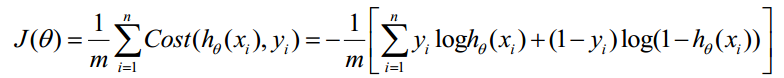

在解释什么是逻辑回归时，我们还是先来了解一下什么是回归？
回归：给出一个点集D，用一个函数去拟合这个点集，并且使得点集与拟合函数间的误差最小，如果这个函数曲线是一条直线，那就被称为线性回归，如果曲线是一条二次曲线，就被称为二次回归。更详细的请参考回归说明
回归主要的种类有：线性回归，曲线回归，二元logistic回归，多元logistic回归
我们还是从简单的开始了解，从上面几种种类来看，先来剖析下下线性回归。
如果拟合的曲线是条直线，那么我们就称为是线性回归。接下来用一个例子更加详细的解释一下线性回归：
比如说我们要做一个房屋价值评估系统。影响房子价值的因素有很多，比如说：面积、房间的数量、房屋地段、朝向等等。这些影响房屋价值的变量称为特征(feature).在这里，为了简单详细的说明，认为房屋的价值只跟一个面积因素有关。
假设有个房屋的销售情况如下：
面积(m^2) 销售价钱（万元）
123 250
150 320
87 160
102 220
… …
我们来画个图，x表示房屋的面积，y表示销售的价格
如果来了一个新的面积，假设在销售价钱的记录中没有的，我们怎么办呢？
我们可以用一条曲线去尽量准的拟合这些数据，然后如果有新的输入过来，我们可以在将曲线上这个点对应的值返回。如果用一条直线去拟合，可能是下面的样子：
绿色的点就是我们需要预测的
在这里就可以预测一个已知面积的房屋的价格了
所以线性回归根据已知数据关系来预测未知数据的值，比如说，预测某个公司的收益跟广告投入、产品质量、服务质量等因素的关系
逻辑回归的本质上是线性回归。只是在特征到结果的映射中加了一层函数映射，即先把特征线性求和，然后使用函数g(z)为假设函数来预测.g(z)可以将连续值映射到0和1上。
它与线性回归的不同点在于：为了将线性回归输出的很大范围的数，例如从负无穷到正无穷，压缩到0和1之间，输出的值表示可能性。
我们可以从下图观察两者之间的区别：
逻辑回归可以用来回归，也可以用来分类，主要是二分类。用于估计某种事物的可能性。比如说是某用户购买某种商品的可能性、某人患某种疾病的可能性以及某种广告被点击的可能性等等(注意这里是：“可能性”,而非数学上的"概率",l逻辑回归的结果并非数学定义中的概率值，不可以直接当作概率值来用。该结果往往用于和其他特征值加权求和，而非直接相乘)。
1).找到一个合适的预测函数，一般表示为h函数，该函数就是我们要找的分类的函数，他用来预测输入数据的判断结果.如下图：
h函数的值有着特殊的意义，他表示结果取1的概率
2).构造一个Cost函数(损失函数(loss function))，该函数表示预测的输出(h)与训练数据(我们输入的数据)类别(y)之间的偏差，可以是两者之间的差(h-y)或者是其他的形式。综合考虑所有训练数据的"损失",将Cost求和或者求平均，记为J(θ)函数，表示所有训练数据预测值和实际类别的偏差。如图：


实际上这里的Cost函数和J(θ)函数是基于最大似然估计推导得到的
3).我们知道J(θ)函数的值越小，表示预测函数h就会越准确。所以这一步是找到J(θ)函数的最小值。如调整θ使得J(θ)取得最小值有很多方法.spark mllib中采用的是随机梯度下降法和L-BFGS法(这两种算法相比，后者能够更快的收敛。).我在这里简单讲解一下梯度下降法（梯度下降法和随机梯度下降法原理是一致的，随机梯度下降法更适合样本数据集庞大的情况下，使得总体向梯度下降最快的方向下降。），你可以去点击这里了解L-BFGS算法
梯度下降法(GD)
首先对θ赋值，这个值可以是随机的，也可以让θ是一个全零的向量。
改变θ的值，使得J(θ)按梯度下降的方向进行减少。
θ更新过程：
θ更新过程可以写成：
直到收敛在一个值，不再发生改变
为了清楚，给出下面的图：

这是一个表示参数θ与误差函数J(θ)的关系图，红色的部分是表示J(θ)有着比较高的取值，我们需要的是，能够让J(θ)的值尽量的低。也就是深蓝色的部分。θ0，θ1表示θ向量的两个维度。
在上面提到梯度下降法的第一步是给θ给一个初值，假设随机给的初值是在图上的十字点。
然后我们将θ按照梯度下降的方向进行调整，就会使得J(θ)往更低的方向进行变化，如图所示，算法的结束将是在θ下降到无法继续下降为止。
当然，可能梯度下降的最终点并非是全局最小点，可能是一个局部最小点，可能是下面的情况：

上面这张图就是描述的一个局部最小点，这是我们重新选择了一个初始点得到的，看来我们这个算法将会在很大的程度上被初始点的选择影响而陷入局部最小点.
4).经过上述步骤后，我们就能得到最优的预测函数，就可以进行预测估计了。
逻辑回归代码主要包含三个部分
1. classfication:逻辑回归分类器
2. optimization:优化计算,包含了随机梯度和LBFGS两种算法
3. regression:线性回归正则化处理,包含Lasso和Ridge两种算法
1 、LogisticRegressionModel 类
根据训练数据集得到的weights来预测新的数据点的分类
2、LogisticRegressionWithSGD类
此类主要接收外部数据集、算法参数等输入进行训练得到一个逻辑回归模型 LogisticRegressionModel
接收的输入参数包括：
input:输入数据集合，分类标签lable只能是1.0和0.0两种,feature为double类型
numIterations:迭代次数， 默认为100
stepSize:迭代步伐大小，默认为1.0
miniBatchFraction:每次迭代参与计算的样本比例，默认为1.0
initialWeights:weight向量初始值，默认为0向量
3、GeneralizedLinearModel类
LogisticRegressionWithSGD中的run方法会调用GeneralizedLinearModel中的run方法来训练训练数据
在run方法中最关键的就是optimize方法，正是通过它来求得weightMatrix的最优解
GradientDescent类：负责梯度下降算法的执行，分为Gradient梯度计算与weight update两个步骤来计算
Gradient类：负责算法梯度计算，包含LogisticGradient、LeastSquaresGradient、HingeGradient三种梯度计算实现
Updater类：负责weight的迭代更新计算，包含了SimpleUpdater(没有使用regularization（正则化))、L1Updater(使用了L1 regularization（R(w) = ||w||）)、SquaredL2Updater(使用了L2 regularization（R(w) = 1/2 ||w||^2）)三种更新策略
任务目的：用一个人的身高和体重来判断这人的体重是不是正常
任务部分数据：
0 182:54 128:51 129:159 130:253 131:159 132:50 155:48 156:238 157:252 158:252 159:252 160:237 183:227
1 159:124 160:253 161:255 162:63 186:96 187:244 188:251 189:253 190:62 214:127 215:251 216:251 217:253
1 125:145 126:255 127:211 128:31 152:32 153:237 154:253 155:252 156:71 180:11 181:175 182:253 183:252
1 153:32 154:63 155:197 181:20 182:254 183:230 184:24 209:20 210:254 211:254 212:48 237:20 238:254
0 130:64 131:253 132:255 133:63 157:96 158:205 159:251 160:253 161:205 162:111 163:4 184:96 185:189
用0代表不正常，用1代表正常 182：54前者为身高，后者为体重
测试代码
def main(args: Array[String]) {
val conf = new SparkConf().setAppName("sparkmlliblogicregressiondemo1").setMaster("local[*]")
val sc = new SparkContext(conf)
// Load training data in LIBSVM format.（得到数据）
val data = MLUtils.loadLibSVMFile(sc, "/usr/local/spark1.4/data/mllib/sample_libsvm_data.txt")
// Split data into training (60%) and test (40%).（将文件中60%作为训练数据，40%作为测试数据）
val splits = data.randomSplit(Array(0.6, 0.4), seed = 11L)
//训练数据
val training = splits(0).cache()
//测试数据
val test = splits(1)
// Run training algorithm to build the model（建立回归模型）
//使用随机梯度下降
val numIterations = 100
val model = LogisticRegressionWithSGD.train(training, numIterations)
model.clearThreshold()
//使用LBFGS算法
val model1 = new LogisticRegressionWithLBFGS()
.setNumClasses(2)
.run(training)
// Compute raw scores on the test set.（计算测试结果的值）
val predictionAndLabels = test.map { case LabeledPoint(label, features) =>
val prediction = model.predict(features)
(prediction,label)
}
//显示预测的值和真实的值
predictionAndLabels.collect.foreach(println)
// Get evaluation metrics.(得到评价指标，准确率)
val metrics = new MulticlassMetrics(predictionAndLabels)
val precision = metrics.precision
println("Precision = " + precision)
// Save and load model
model.save(sc, "myModelPath")
val sameModel = LogisticRegressionModel.load(sc, "myModelPath")
}
运行结果
前面一个是我们根据模型预测出来的值，后者则是真实的值
建立的模型预测的准确率是100%